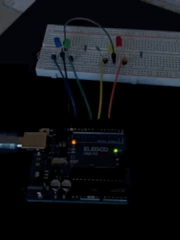
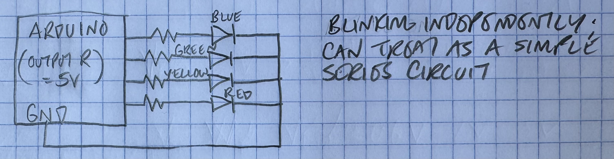
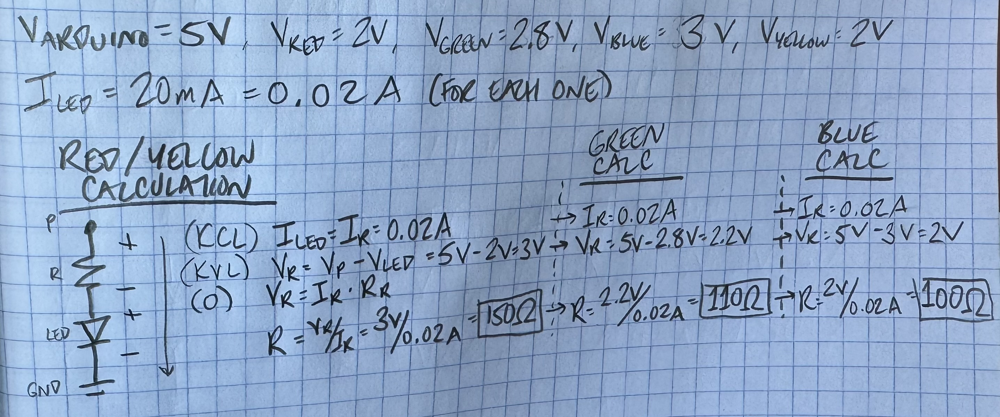
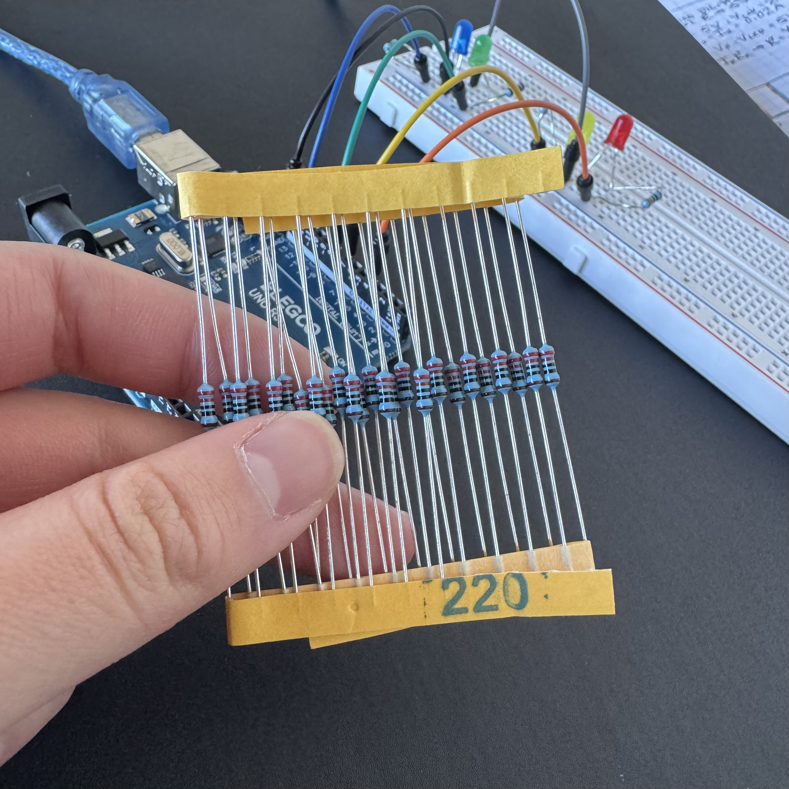
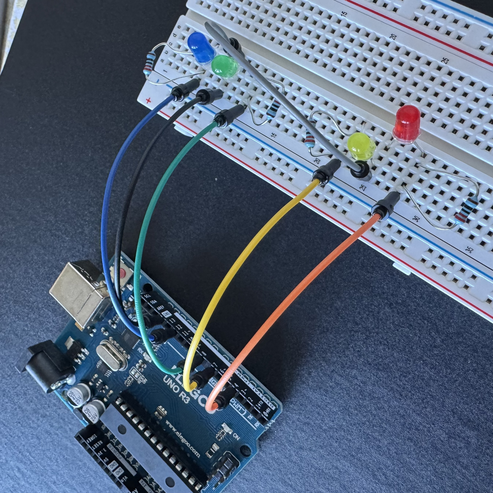
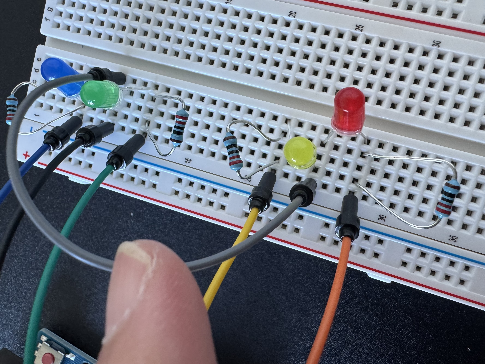
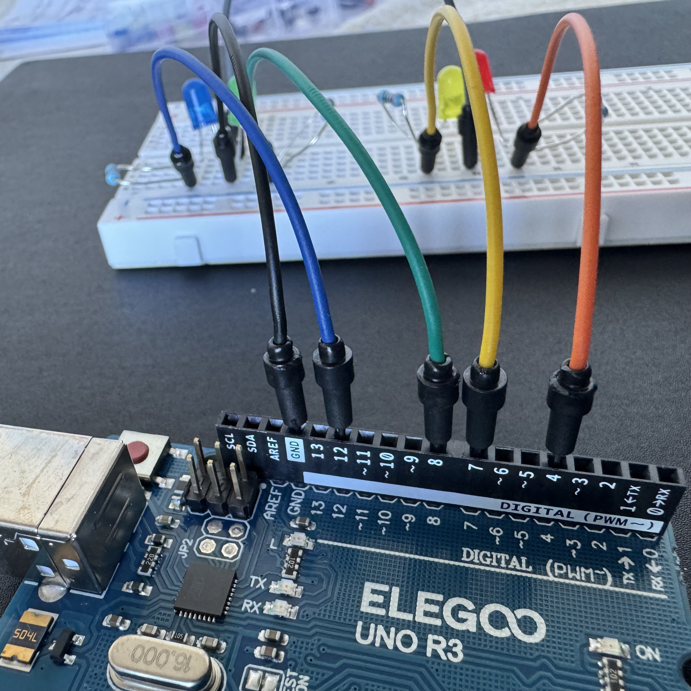
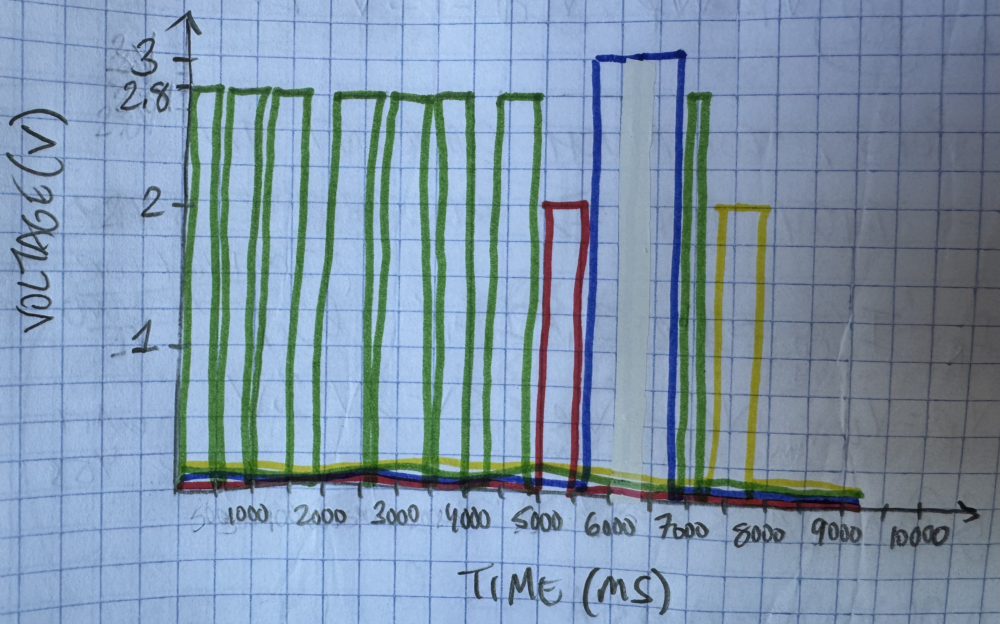

"You work for a holiday light company and the chief innovation officer wants you to come up with a cool new pattern of blinking lights.
You will create a schematic for at least 3 LEDs connected to your Arduino, which you will implement as a circuit on your breadboard.
You will write firmware (in a .ino file) for the circuit that makes the LEDs blink in a pattern. You will also answer some questions."
I started this assignment off by writing out the requirements of the assignment:
Since the assignment was holiday-themed, I thought I could blink colorful lights to a holiday tune. I chose "Jingle Bells" because it is classic, and it doesn't have too much rhythmic or melodic complexity. Since it only has four notes, I only needed four LEDs.
I drew a schematic to visualize my 4-LED circuit.

I found the LED forward voltages and suggested using current for each color in datasheets online. I then did some math to figure out which resistors to use so I wouldn't explode my LEDs. Each LED required a resistor between 100Ω and 150Ω. The closest resistors in my kit were 100Ω and 220Ω, so I went with 220Ω for all of them to be safe.


I brought my drawings to life by building my circuit using my breadboard, Arduino, wires, LEDs, and 220Ω resistors.



I then wrote some code to blink the lights to "Jingle Bells."
// the setup function runs once when you press reset or power the board
void setup() {
// initialize digital pin LED_BUILTIN as an output.
pinMode(12, OUTPUT); // Using pin 12 as an output (BLUE)
pinMode(8, OUTPUT); // Using pin 8 as an output (GREEN)
pinMode(7, OUTPUT); // Using pin 7 as an output (YELLOW)
pinMode(4, OUTPUT); // Using pin 4 as an output (RED)
}
// the loop function runs over and over again forever
void loop() {
// Everything off
digitalWrite(12, LOW); // Blue LED off
digitalWrite(8, LOW); // Green LED off
digitalWrite(7, LOW); // Yellow LED off
digitalWrite(4, LOW); // Red LED off
// GREEN GREEN GREEN. JIN GLE BELLS.
digitalWrite(8, HIGH); // G LED on
delay(500); // Hold for half a second
digitalWrite(8, LOW); // G LED off
delay(100); // Hold for 100ms
digitalWrite(8, HIGH); // G LED on
delay(500); // Hold for half a second
digitalWrite(8, LOW); // G LED off
delay(100); // Hold for 100ms
digitalWrite(8, HIGH); // G LED on
delay(500); // Hold for half a second
digitalWrite(8, LOW); // G LED off
delay(500); // Hold for half a second
// GREEN GREEN GREEN. JIN GLE BELLS.
digitalWrite(8, HIGH); // G LED on
delay(500); // Hold for half a second
digitalWrite(8, LOW); // G LED off
delay(100); // Hold for 100ms
digitalWrite(8, HIGH); // G LED on
delay(500); // Hold for half a second
digitalWrite(8, LOW); // G LED off
delay(100); // Hold for 100ms
digitalWrite(8, HIGH); // G LED on
delay(500); // Hold for half a second
digitalWrite(8, LOW); // G LED off
delay(500); // Hold for half a second
// GREEN RED BLUE GREEN YELLOW. JIN GLE ALL THE WAY.
digitalWrite(8, HIGH); // G LED on
delay(500); // Hold for half a second
digitalWrite(8, LOW); // G LED off
digitalWrite(4, HIGH); // R LED on
delay(500); // Hold for half a second
digitalWrite(4, LOW); // R LED off
digitalWrite(12, HIGH); // B LED on
delay(1000); // Hold for one second
digitalWrite(12, LOW); // B LED off
digitalWrite(8, HIGH); // G LED on
delay(250); // Hold for 250ms
digitalWrite(8, LOW); // G LED off
digitalWrite(7, HIGH); // Y LED on
delay(500); // Hold for half a second
digitalWrite(7, LOW); // Y LED off
delay(2000); // Hold for two seconds
}
Finally, I uploaded my code and jingled all the way!
1: Draw a graph where the X axis is time and the Y axis is voltage across the LEDs. Draw a line for each of your 3 LEDs.
